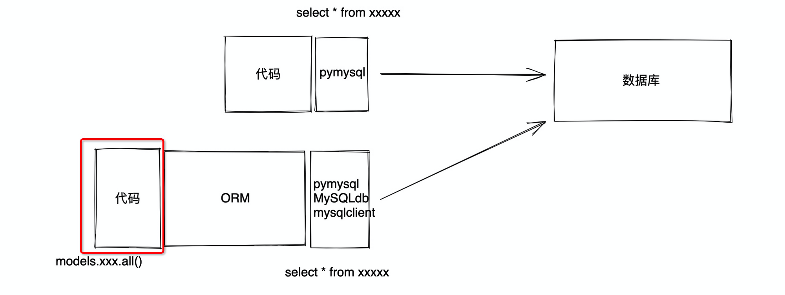
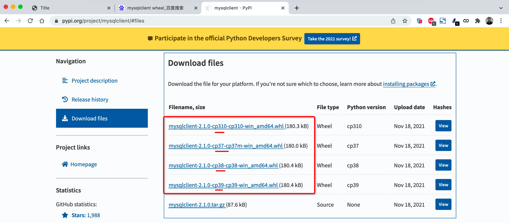

ORM
1. ORM
ORM是django内置的数据库框架，不需要写原生sql就可以对数据库表和数据进行操作（无法对数据库操作）

ORM底层可以使用第三方库对数据库进行连接
- pymsql
- MySQLdb
- mysqlclient (官方推荐的库）
2. django连接mysql
2.1 安装mysqlclient

2.2 创建数据库
- django无法对数据库进行操作，所以需要用mysql操作
2.3 django连接数据库
- 在setting—>DATABASES中配置：
DATABASES = {
'default': {
'ENGINE': 'django.db.backends.mysql',
'NAME': 'gx_day15', # 数据库名字
'USER': 'root',
'PASSWORD': 'root123',
'HOST': '127.0.0.1', # 安装了MySQL的服务器
'PORT': 3306,
}
}
3. ORM操作数据表
表相关操作在
APP下的models.py文件中操作
- 新创建一个类表示创建一张表；
- 表名为
app名字_类名，如shop_user
models.py中有任何对表的改动，都需要执行以下命令
- cd到项目根目录
3.1 创建表
models文件中
class UserInfo(models.Model):
name = models.CharField(max_length=32)
password = models.CharField(max_length=64)
age = models.IntegerField()
以上语句相当于：
create table app01_userinfo(
id bigint auto_increment primary key,
name varchar(32),
password varchar(64),
age int
)
- 在models文件中创建类，会自动创建id自增主键
3.2 删除表和列
- 每个class为一张表，删除表注释掉对应class代码即可
- 删除列也选择注释掉
3.3 新增字段
在表中新增列时，由于已有的字段有数据，新增列暂无数据，所以有三种填充方式：
- 手动指定一个值
- 在字段后加默认值参数
- 允许为空
4. 数据操作
4.1 新增
Department.objects.create(title="销售部")
Department.objects.create(title="IT部")
Department.objects.create(title="运营部")
UserInfo.objects.create(name="武沛齐", password="123", age=19)
UserInfo.objects.create(name="朱虎飞", password="666", age=29)
# 对应字段不指定，则按默认值填充
UserInfo.objects.create(name="吴阳军", password="666")
4.2 删除
4.3 查询
# 获取符合条件的所有数据
# data_list = [对象,对象,对象] QuerySet类型
data_list = UserInfo.objects.all()
for obj in data_list:
print(obj.id, obj.name, obj.password, obj.age)
# 获取筛选的数据，如果仅有一条
row_obj = UserInfo.objects.filter(id=1).first()
print(row_obj.id, row_obj.name, row_obj.password, row_obj.age)
# 以字典方式传参至filter
models.PrettyNum.objects.filter(mobile="19999999991",id=12)
data_dict = {"mobile":"19999999991","id":123}
models.PrettyNum.objects.filter(**data_dict)
# 数值判断
models.PrettyNum.objects.filter(id=12) # 等于12
models.PrettyNum.objects.filter(id__gt=12) # 大于12
models.PrettyNum.objects.filter(id__gte=12) # 大于等于12
models.PrettyNum.objects.filter(id__lt=12) # 小于12
models.PrettyNum.objects.filter(id__lte=12) # 小于等于12
data_dict = {"id__lte":12}
models.PrettyNum.objects.filter(**data_dict)
# 字符串判断
models.PrettyNum.objects.filter(mobile="999") # 等于
models.PrettyNum.objects.filter(mobile__startswith="1999") # 筛选出以1999开头
models.PrettyNum.objects.filter(mobile__endswith="999") # 筛选出以999结尾
models.PrettyNum.objects.filter(mobile__contains="999") # 筛选出包含999
data_dict = {"mobile__contains":"999"}
models.PrettyNum.objects.filter(**data_dict)
4.4 更新
UserInfo.objects.all().update(password=999)
UserInfo.objects.filter(id=2).update(age=999)
UserInfo.objects.filter(name="朱虎飞").update(age=999)
5. 联表操作
5.1 主键和自增
models.AutoField自动增加的一个数据库字段类型，例如id字段就可以使用该数据类型，参数中必须填入primary_key=Truemodels.BigAutoField和AutoField相同，64位整数，参数中必须填入primary_key=True- 自增类型需要和django指定类型一致，可以在
AppConfig.default_auto_field中指定，或者在DEFAULT_AUTO_FIELD全局指定
5.2 数据库范式
在联表关联字段时，应该选择被链接表的ID，而不是具体信息，主要是因为节省内存占用
5.3 字段约束
# 无约束
depart_id = models.BigIntegerField(verbose_name="部门ID")
# 有约束
depart = models.ForeignKey(to="Department", to_field="id")
-- ForeignKey -->一对多数据库时设置约束
-- ManyToManyField --> 多对多数据库设置约束
-- to -->与哪张表关联
-- to_field -->与关联表的哪一个字段关联
# django约束
gender_choices = (
(1, "男"),
(2, "女"),
)
gender = models.SmallIntegerField(verbose_name="性别", choices=gender_choices)
5.4 关联字段被删除
- 级联删除
on_delete=models.CASCADE：删除关联数据，与之关联也删除
- 置空
on_delete=models.SET_NULL：删除关联数据，与之关联的值设置为null（前提FK字段需要设置为可空）